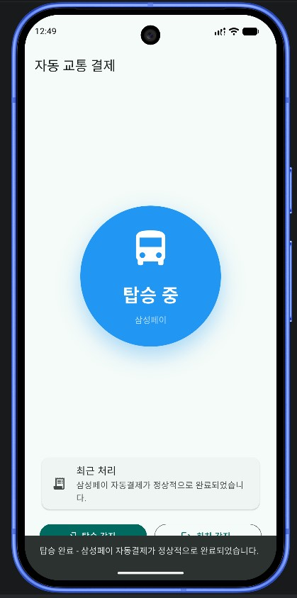
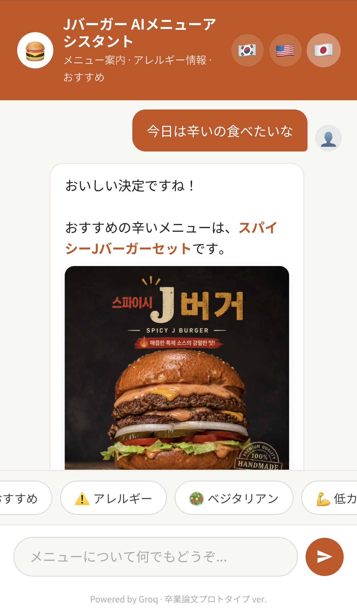

Featured Projects
현실의 문제를 기술로 해결한 주요 작업물입니다.
 🎮
🎮
2024.03 ~ 2024.06
Web Development
KaKaroto: 애니 & 게임 큐레이션 웹
사용자가 선호하는 애니메이션과 게임 정보를 한눈에 확인할 수 있는 콘텐츠 큐레이션 웹사이트입니다. 시각적 요소 중심의 레이아웃으로 풍부한 사용자 경험을 제공합니다.
- ✔ 반응형 그리드 시스템을 활용한 콘텐츠 배치
- ✔ HTML5/CSS3를 활용한 구조와 스타일의 엄격한 분리
HTML5
CSS3
Responsive Design
2026.03 ~ 2026.04
IoT & Mobile
BLE 비콘 버스 승하차 시스템
저전력 블루투스(BLE) 기술을 활용한 스마트 대중교통 솔루션입니다. 동남아시아 시장을 타겟으로 저비용 고효율 인프라 구축을 제안했습니다.
- ✔ 배터리 소모 70% 최적화 기술
- ✔ 오프라인 우선 감지 알고리즘
Beacon
Flutter
Node.js


2026.03 ~ 2026.06
Full-Stack Development
QR 기반 AI 메뉴 어시스턴트
외국인 관광객을 위한 실시간 다국적 AI 메뉴 추천 시스템입니다. LLM과 RAG 기술을 활용하여 음식의 맥락과 재료 정보를 정확하게 전달합니다.
- ✔ LLM + RAG 기반 맥락 인식 응답
- ✔ 앱 설치 없는 QR 코드 접근성
Node.js
OpenAI API
Tailwind CSS